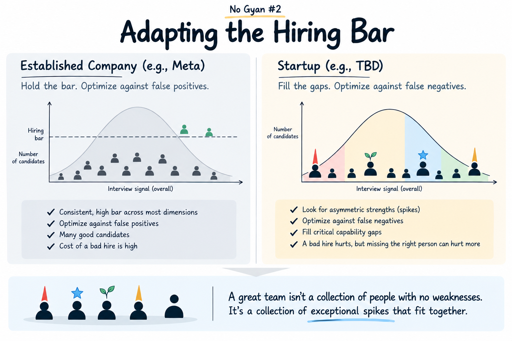

For years at Meta, one of my responsibilities in hiring was simple.
Hold the bar.
At that scale, it makes sense. You have thousands of exceptional people, lots of candidates, and an institution that needs a reasonably consistent definition of quality. A false positive can be expensive. The cost of any one false negative is usually much smaller.
Now, building a startup, I’m realizing the optimization function is almost inverted.
A startup is mostly capability gaps waiting to be filled with exceptional talent.
Does this person dramatically change what this team can do?
That changes the mistakes I’m willing to make. At scale, I optimized harder against false positives. At a startup, I’m increasingly willing to optimize against false negatives.
That can easily sound like lowering the bar.
It isn’t. It’s changing the shape of the bar.

Think about the full distribution of candidate performance.
The obvious right-tail candidates are easy.
In the middle, I want a clear reason to believe: unusually high intercept—already exceptional at something we absolutely need—or unusually high slope—evidence that they learn and accelerate unusually fast.
And sometimes the most interesting candidate is someone who bombs parts of the interview but has an extraordinary spike in exactly the capability the team is missing. That’s a bet I increasingly want to take.
This only works if you do the homework: define the work and the capabilities you actually need. Interview for the uncertainties. Do pointed reference checks on exactly what worries you.
Then take some asymmetric bets.
Because in a startup, the unit of hiring risk shouldn’t be the individual. It should be the team.
A great team isn’t a collection of people with no weaknesses. It’s a collection of exceptional spikes that fit together.
← All No Gyan essays